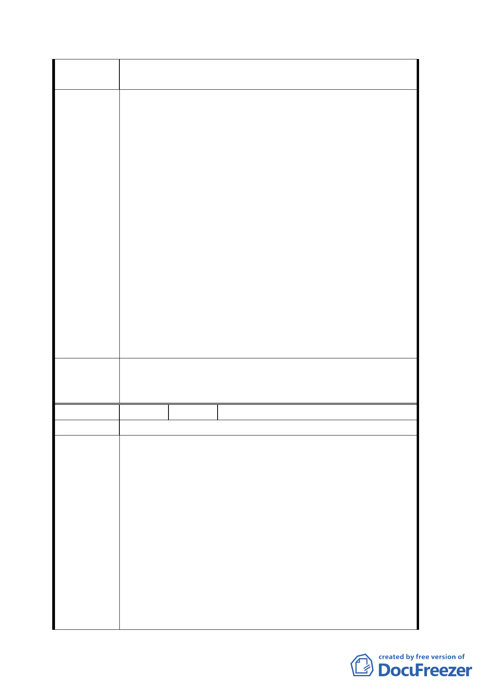

壓迫感增加綠地，增加提供道路及停車場，並賦予鄰近北
醫圍牆退縮之容積交換。
一、建議本基地未來開發高價位之精緻住宅，取代高容積
建物減少壓迫感，交換空間再利用多餘之停車位，交
換北醫吳興街人行道用地。
二、A3 區塊：整體基地 B1 及 2F 作為停車場，1F 作活動場
所及日用品賣場，其他作為住宅，大樓量體建議採漸
縮式，減少對克勤及主要道路上之視覺壓迫感。
三、A4 區塊：建議原有營區靠山之水池保留，作為生態池
空間。
四、勿忘瑠公圳之美，信安街改右弧，所留出之空地打除
建議辦法
水泥露出水圳加以美化為花見小道，以天橋連接公園
區。
五、各區塊間以天橋聯通有利人車分離，增加行人便利及
車流順暢。
六、A5 區塊之尖端改為圓形塊。
七、本基地鄰近靠山 16 戶聚落之安排，仿九份博物館公
園，讓生態與民俗藝術之美並存。
八、公園內保留社區菜園。
九、屋頂造型用斜面式光電板，可供應公共用電。
一、本計畫案原則通過。有關屬都市設計之建議留供將來開
委
員會
議
決
發建築時參考。
二、建議事項七、因非於計畫範圍，建議留供相關單位參考。
編
號 １1
陳情人 王正良
陳情理由
一、雙平面規劃：公園、居住、徒步、景觀皆於地表平面
表現，車輛運輸動線網路、停車場、連外道路皆以地
下平面承接。
二、銀髮族全面照顧示範社區：本區以籌建、經營前瞻性
的老人醫護示範社區最為有利。
(一) 臺北市可以此指標性社區與先進國家進行高齡社會
建議辦法
主題研究合作，貢獻國際社會，自然提升國際能見
度。
(二) 解決國內亟待解決的老人醫護安養問題。
(三) 北醫藉本案深入走向社區（以地下道貫穿吳興街 220
巷，將北醫的醫護設備與本區交通網相連，透過前
述之地下平面達到最緊密便捷的連結），定可提升校
譽，並創造多元的效益。
八